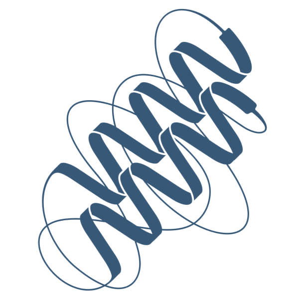

AC215 Project Showcase
(December 9th 2024 - 9:00 AM - 11:00 AM)
| Description | |
|---|---|
| 1. DecAide Our tool allows for celebrity stylists, people who need an efficient way to understand historical fashion references, to style their clients using clothing featured on high fashion runways. Our app takes images of outfits, identifies the year that each outfit most closely resembles, and provides recommendations and information to the user based off of that decade and its popular trends. | |
| 2. SnapChef An app that identifies dishes from images, generates detailed recipes, and tailors them to individual preferences and dietary needs could empower food enthusiasts to recreate dishes seen on social media or in restaurants effortlessly. | |
| 3. CareConverse CareConverse is an LLM-powered chatbot to surface personalized information on optimal chronic disease management. By utilizing a large language model (LLM) combined with Retrieval-Augmented Generation (RAG), CareConverse will deliver concise, pertinent context to patients looking for clarity, reassurance and direction on their disease experience, along with citations and links to relevant content. This approach ensures transparency and trust, as users can verify the information and further explore the literature. | |
| 4. Pourfect AI PourfectAI is a conversational chatbot bartender that blends expert mixology knowledge with the convenience of a personal recommendation system. PourfectAI suggests the perfect drink based on user preferences, mood, ingredients on hand, or even dietary needs—whether it’s a fresh mocktail or a classic cocktail with a twist. PourfectAI – where every pour is perfectly yours! | |
| 5. ClinIQ To develop a diagnostic medical assistant tool where clinicians can input symptoms/patient notes into a chatbot and receive possible diagnoses and recommended medications to guide faster, more accurate diagnoses. | |
| 6. EmpathOS Our project, EmpathOS, is a mental health chatbot providing immediate, confidential, and expert support for individuals facing mental health challenges. Leveraging fine-tuning and Retrieval-Augmented Generation (RAG) on Google Cloud, it delivers 24/7, evidence-based guidance, specifically tailored for groups such as teenagers and college students, ensuring scientifically grounded, context-aware responses. |  |
| 7. 1nvestSense – LLM-powered stock advisor for GenZ investors 1nvestSense is an AI-powered application that leverages LLMs to deliver real-time, actionable insights from market news, tailored specifically for retail investors, particularly Gen Z. | |
| 8. CrimsonChat Computer Science graduate students enter Harvard expecting to be productive and have effortless access to resources, but they hit the obstacle of bureaucratic overhead. CrimsonChat addresses the problem through a friendly, 24/7 available assistant with comprehensive knowledge of departmental resources. For stressed students, CrimsonChat also offers 24/7 mental health support. | |
| 9. MoodSync Introducing a cutting-edge music recommendation tool designed to understand and enhance your listening experience. Simply share how you’re feeling and your favorite music elements, and our tool leverages AI to craft playlists that perfectly match your current emotional and musical appetite. | |
| 10. Priva-see Priva-see is your path to data privacy for any terms and conditions. Simply upload a set of terms and conditions and get a privacy grade along with a summary of key issues. Or input your privacy preferences and receive personalized app recommendations that meet your privacy needs. | |
| 11. SmartEats SmartEats is an innovative AI-powered application that analyzes food images, predicts disease risks, and provides personalized nutrition advice. By simply uploading a photo of their meal, users can get an estimate of nutritional components, calorie count, and tailored dietary suggestions. While designed for a broad audience, SmartEats is especially valuable for individuals with specific dietary needs - whether they’re looking to lose weight, track daily calories, optimize nutrition for fitness, or manage diet-related health risks. | |
| 12. Protein_Server This project aims to develop a user-friendly web application for researchers in protein research. An interactive chatbot will be built to answer general questions on protein structures, functions, and characteristics. A protein LM based tool will allow users to input protein sequences and receive protein function prediction, such as thermostability. |  |
| 13. Capy Running Capy Running gives you full-control over your training without the need to get yet another app. We are an on-demand 24/7 AI-powered personal running coach that works by 1/10 of the cost of a normal coach and all through Whatsapp Messaging. With Capy Running, you get a personalized training schedule, reminders, performance recording and much more. | |
| 14. ByteBites We designed and developed an AI-powered recipe web app that processes shopping receipts to automatically detect purchased food items and suggest corresponding recipes. Users can also specify dietary preferences, such as vegan or gluten-free options. Additionally, we plan to integrate a nutrition tracking feature to enhance the functionality of our app. | |
| 15. SpiritMatch In general, getting started with cocktail making at home can be quite intimidating. There are a lot of things to keep in mind (such as drink ingredients, tools, garnishes, whether or not to add ice, etc.). Therefore, the aim of this project is to develop an application that can allow for users to rely on a virtual bartender, Eustace, who will easily generate cocktail recipe recommendations based on the user’s mood, situation, and/or household ingredients. With every interaction, users can expect a unique and thoughtful experience, where cocktail-making becomes both a creative journey and a delightful discovery, tailored just for them. | |
| 16. Yarn Master It’s really common to find crochet products we’d love to make ourselves, but finding clear, step-by-step instructions can be really challenging. Currently, there isn’t an AI-powered tool that can effectively generate meaningful crochet instructions. We came up with the idea of developing a deep learning model specifically designed for crochet products. Users would be able to upload pictures of crochet items they find interesting, and the model would generate detailed instructions for recreating those products. |